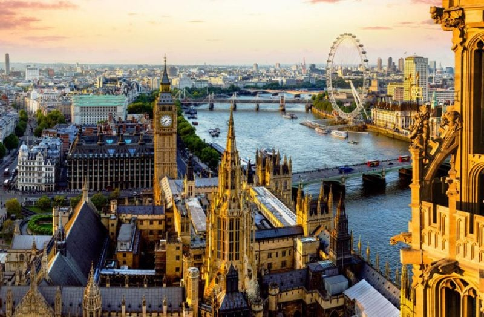
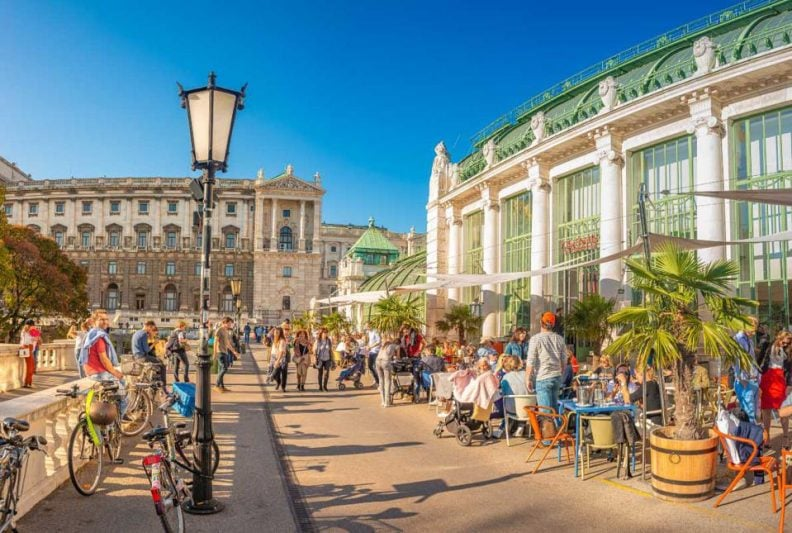
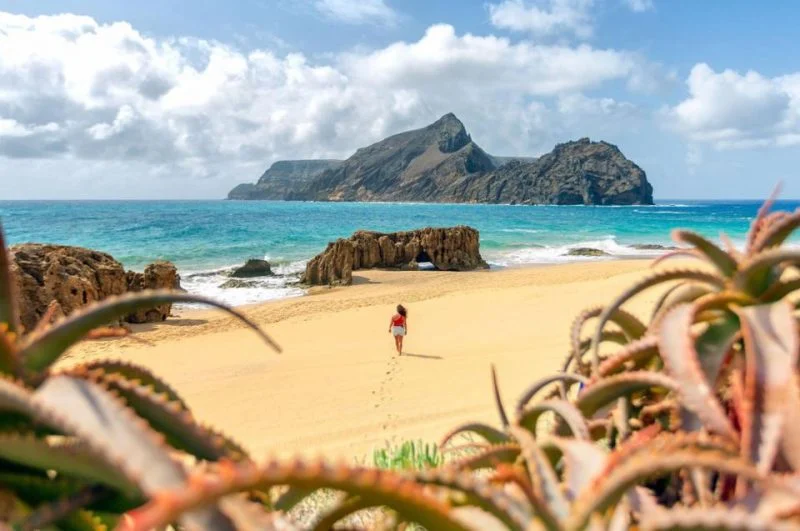
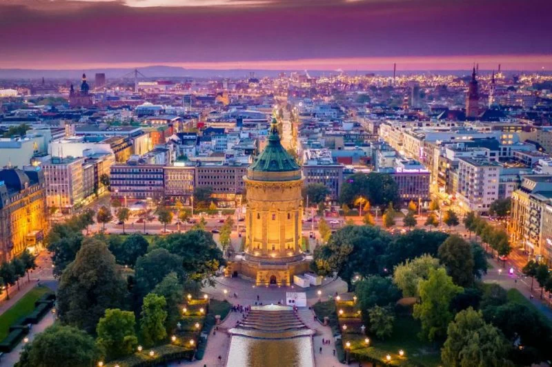

Destinos Europeu
Londres, Reino Unido

Como em nenhum outro lugar, a cidade reúne comerciantes, empresários, artistas, criadores, designers, membros da realeza e celebridades. A sua oferta turística vai muito além do Big Ben, da London Eye e do Madame Tussauds, que sempre vão entreter turistas de todas as idades. Seus parques urbanos de beleza rara estão entre os mais atraentes da Europa.
Cenário de filmes icônicos como “Notting Hill”, Londres reúne os mercados de pulgas de Portobello e suas casas coloridas; bairros famosos e excêntricos como Camden Town; ruas comerciais como Regent Street e Oxford Street; e distritos comerciais, artísticos e de design alternativos como Carnaby Street, Covent Garden e o bairro LGBTQ do Soho. Os teatros de Londres também são conhecidos por apresentar peças e musicais de renome mundial.
Cenário de filmes icônicos como “Notting Hill”, Londres reúne os mercados de pulgas de Portobello e suas casas coloridas; bairros famosos e excêntricos como Camden Town; ruas comerciais como Regent Street e Oxford Street; e distritos comerciais, artísticos e de design alternativos como Carnaby Street, Covent Garden e o bairro LGBTQ do Soho. Os teatros de Londres também são conhecidos por apresentar peças e musicais de renome mundial.
Leia mais
Viena, Áustria

Viena é um destino ideal para o romance: passeios de charrete, visitas aos palácios reais da cidade e, à noite, uma valsa ao som do Danúbio Azul de Strauss o transportarão ao tempo da imperatriz Sissi.
Também é a cidade perfeita para férias divertidas entre amigos, famílias, namorados e solteiros. Abertamente gay-friendly, é uma das cidades mais seguras da Europa: a sensação de segurança é muito forte, que a fez ser conhecida por sua qualidade de vida e baixo índice de criminalidade.
“Adoramos Viena na primavera e no verão, com seus parques entre os mais belos da Europa, como o Prater — lar de uma das mais belas rodas-gigantes do continente”, diz a EBD. Também é considerado um dos melhores lugares para se fazer um pedido de casamento.
Leia mais
Porto-Santo, Ilhas Madeira

Acessível de avião ou de balsa, Porto Santo tem um dos pores do sol mais belos da Europa. Conhecida como “ilha dourada” pelos seus nove quilômetros de praias de areia, é a menor ilha habitada do Arquipélago da Madeira, a apenas uma hora e meia de voo de Lisboa, a 500 km da costa africana e a 1.000 km do continente europeu.
Com um clima tropical durante quase o ano todo, é um convite para descobrir lindas praias, patrimônios históricos e belezas geológicas. Resumindo, é um local perfeito para se desligar, desfrutar da natureza, relaxar e ver o pôr do sol, fazer um bom tratamento de spa, jogar golfe ou praticar alguma atividade marítima.
Leia mais
Mannheim, Alemanha

No coração da região metropolitana de Rhine-Neckar, Mannheim é uma cidade universitária animada com um toque multicultural e um calendário cheio de eventos – ela, inclusive, é a sede do melhor evento de 2023, segundo a EBD, e aparece como o melhor destino de arte de rua da Europa.
Conhecida como a cidade das praças, oferece uma série de tesouros arquitetônicos: o palácio barroco, uma torre de água histórica e uma praça Art Nouveau, para citar alguns. Também é a cidade da cultura e dos festivais, atraindo amantes do teatro e do techno, apreciadores de jazz e cinéfilos. A cena artística é repleta e variada, desde o complexo do museu Reiss-Engelhorn e a galeria de arte Kunsthalle até os murais de grafiteiros em uma galeria ao ar livre para arte de rua internacional.
É uma cidade verde à beira de dois rios que combina urbanidade com atividades recreativas em ambientes naturais quase intocados. Um dos seus destaques em 2023 é o Federal Garden Show “BUGA” (de 14 de abril a 8 de outubro de 2023), um grande laboratório do futuro do desenvolvimento urbano, que vai muito além de uma mera exposição de plantas e flores.
Leia mais